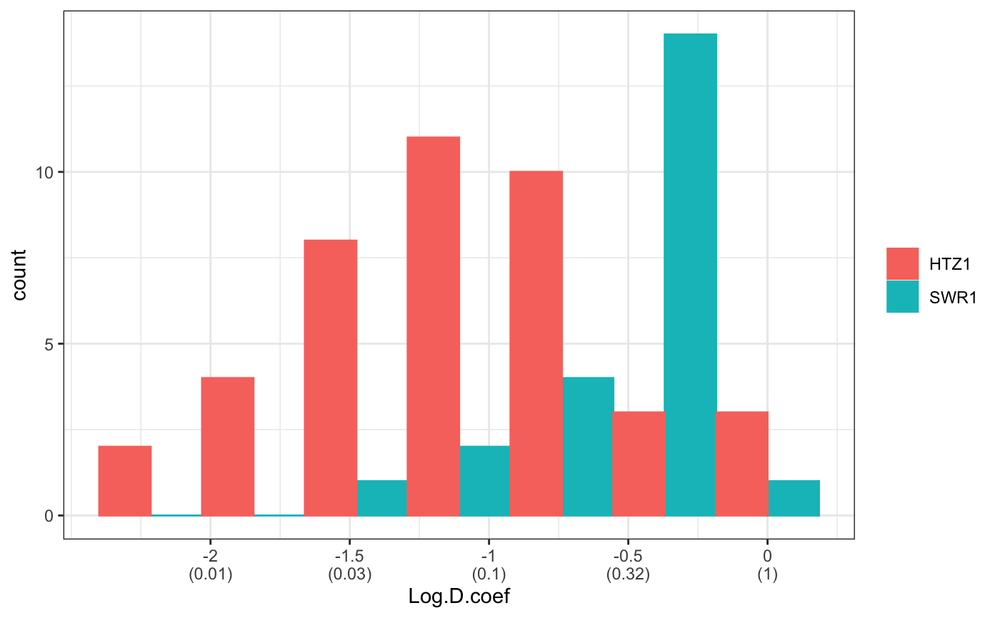
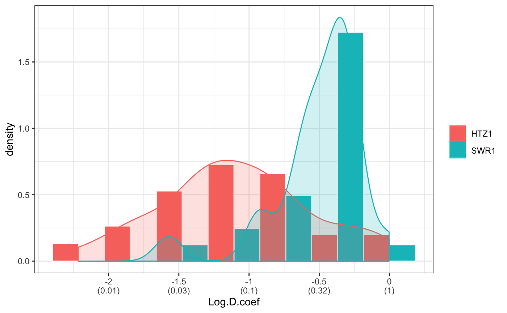
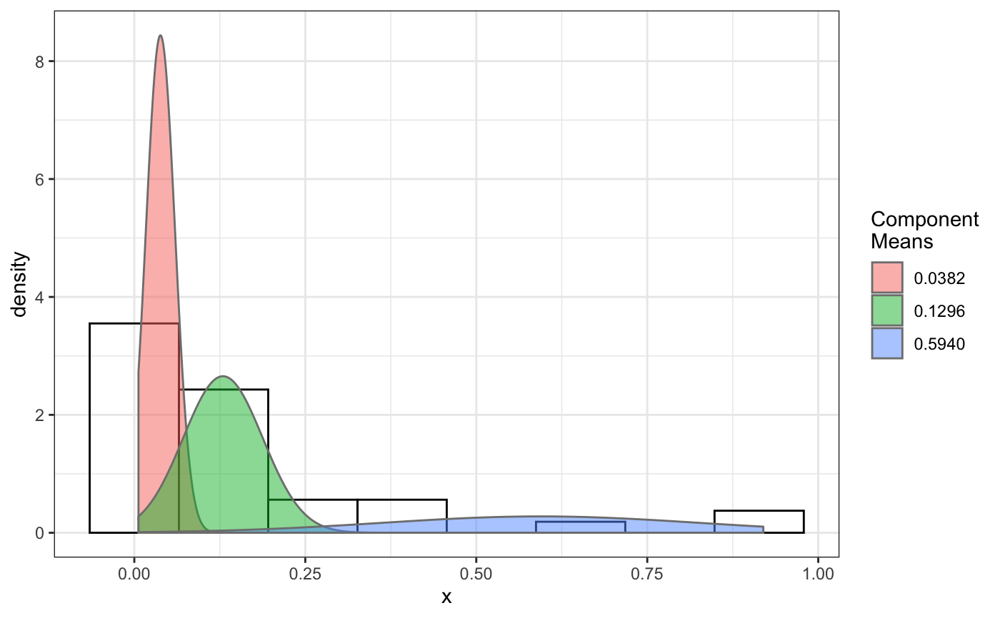

given a dcoef result, return Confidence Interval information(mean, bounds, std err) for diffusion coefficient and the proportions of each components.
getCI(bootstrap.result,confidence=0.95,output=FALSE)
Arguments
| confidence | the level of confidence that is used to calculate the confidence interval. |
|---|---|
| bootstrap.result | diffusion coefficient calculated from Dcoef(). |
| output | Logical indicate if output file should be generated. |
Value
list of items, each of which will contain for each distribution component:
- Estimate
Mean estimated from sample
- CI lower
Lower bound of the confidence interval
- CI upper
Upper bound of the confidence interval
- Std. Error
Std. Error for given data
Details
Supplied with a bootstrap output, it calculates the confidence range. The t-distribution/critical-t was used to calculate the Confidence Interval.
Examples
# compare folders folder1=system.file("extdata","SWR1",package="sojourner") folder2=system.file("extdata","HTZ1",package="sojourner") trackll=compareFolder(folders=c(folder1,folder2), input=3)#> #> Reading ParticleTracker file: SWR1_WT_140mW_image6.csv ... #> #> mage6 read and processed. #> #> Process complete. #> #> Merging of folder SWR1 complete. #> #> ... #> #> Reading ParticleTracker file: HTZ1_140mW_WT.csv ... #> #> mW_WT read and processed. #> #> Process complete. #> #> Merging of folder HTZ1 complete. #> #> ...#> applying filter, min 7 max Inf #> 45 tracks length > & = 1 45 tracks length > & = 2 45 tracks length > & = 3 45 tracks length > & = 4 45 tracks length > & = 5 45 tracks length > & = 6 #> #> ... #> 122 tracks length > & = 1 122 tracks length > & = 2 122 tracks length > & = 3 122 tracks length > & = 4 122 tracks length > & = 5 122 tracks length > & = 6 #> #> ...#> #> applying static,lag.start= 2 lag.end= 5 #> lag.start 2 lag.end 5 #> #> Applying r square filter... 0.8#> Warning: NaNs produced#> #> Plotting histogram... #> auto binwidth = 0.3691397#> Warning: Removed 3 rows containing non-finite values (stat_bin).#> #> Plotting density... #> auto binwidth = 0.3691397#> Warning: Removed 3 rows containing non-finite values (stat_bin).#> Warning: Removed 3 rows containing non-finite values (stat_density).#> #> IMPORTANT: Ensure a seed has been manually set! See help docs for more info. #> #> components analysis #> bootstrapping LRTS ... #> | | | 0% | | | 1% | |= | 1% | |= | 2% | |== | 2% | |== | 3% | |== | 4% | |=== | 4% | |=== | 5% | |==== | 5% | |==== | 6% | |===== | 6% | |===== | 7% | |===== | 8% | |====== | 8% | |====== | 9% | |======= | 9% | |======= | 10% | |======= | 11% | |======== | 11% | |======== | 12% | |========= | 12% | |========= | 13% | |========= | 14% | |========== | 14% | |========== | 15% | |=========== | 15% | |=========== | 16% | |============ | 16% | |============ | 17% | |============ | 18% | |============= | 18% | |============= | 19% | |============== | 19% | |============== | 20% | |============== | 21% | |=============== | 21% | |=============== | 22% | |================ | 22% | |================ | 23% | |================ | 24% | |================= | 24% | |================= | 25% | |================== | 25% | |================== | 26% | |=================== | 26% | |=================== | 27% | |=================== | 28% | |==================== | 28% | |==================== | 29% | |===================== | 29% | |===================== | 30% | |===================== | 31% | |====================== | 31% | |====================== | 32% | |======================= | 32% | |======================= | 33% | |======================= | 34% | |======================== | 34% | |======================== | 35% | |========================= | 35% | |========================= | 36% | |========================== | 36% | |========================== | 37% | |========================== | 38% | |=========================== | 38% | |=========================== | 39% | |============================ | 39% | |============================ | 40% | |============================ | 41% | |============================= | 41% | |============================= | 42% | |============================== | 42% | |============================== | 43% | |============================== | 44% | |=============================== | 44% | |=============================== | 45% | |================================ | 45% | |================================ | 46% | |================================= | 46% | |================================= | 47% | |================================= | 48% | |================================== | 48% | |================================== | 49% | |=================================== | 49% | |=================================== | 50% | |======================================================================| 100% #> ------------------------------------------------------------- #> Bootstrap sequential LRT for the number of mixture components #> ------------------------------------------------------------- #> Model = V #> Replications = 999 #> LRTS bootstrap p-value #> 1 vs 2 2.206494 0.703 #> #> #> most likely components 1 at significant level 0.05 #>#> Warning: row names were found from a short variable and have been discarded#> auto binwidth = 0.2157974#> #> components analysis #> bootstrapping LRTS ... #> | | | 0% | | | 1% | |= | 1% | |= | 2% | |== | 2% | |== | 3% | |== | 4% | |=== | 4% | |=== | 5% | |==== | 5% | |==== | 6% | |===== | 6% | |===== | 7% | |===== | 8% | |====== | 8% | |====== | 9% | |======= | 9% | |======= | 10% | |======= | 11% | |======== | 11% | |======== | 12% | |========= | 12% | |========= | 13% | |========= | 14% | |========== | 14% | |========== | 15% | |=========== | 15% | |=========== | 16% | |============ | 16% | |============ | 17% | |============ | 18% | |============= | 18% | |============= | 19% | |============== | 19% | |============== | 20% | |============== | 21% | |=============== | 21% | |=============== | 22% | |================ | 22% | |================ | 23% | |================ | 24% | |================= | 24% | |================= | 25% | |================== | 25% | |================== | 26% | |=================== | 26% | |=================== | 27% | |=================== | 28% | |==================== | 28% | |==================== | 29% | |===================== | 29% | |===================== | 30% | |===================== | 31% | |====================== | 31% | |====================== | 32% | |======================= | 32% | |======================= | 33% | |======================= | 34% | |======================== | 34% | |======================== | 35% | |========================= | 35% | |========================= | 36% | |========================== | 36% | |========================== | 37% | |========================== | 38% | |======================================================================| 100% #> ------------------------------------------------------------- #> Bootstrap sequential LRT for the number of mixture components #> ------------------------------------------------------------- #> Model = V #> Replications = 999 #> LRTS bootstrap p-value #> 1 vs 2 54.903376 0.001 #> 2 vs 3 11.668292 0.034 #> 3 vs 4 5.306087 0.342 #> #> #> most likely components 3 at significant level 0.05 #> #> number of iterations= 66 #> summary of normalmixEM object: #> comp 1 comp 2 comp 3 #> lambda 0.4521267 0.3866242 0.161249 #> mu 0.0382023 0.1295988 0.594011 #> sigma 0.0213760 0.0580876 0.232064 #> loglik at estimate: 37.52117 #> NULL #> auto binwidth = 0.1305189 #> #> approximating standard error by parametic bootstrap... #>#> $SWR1 #> [,1] #> proportion 1.00000000 #> mean 0.32091361 #> sd 0.05036344 #> log.lik -0.99716894 #> #> $HTZ1 #> [,1] [,2] [,3] #> proportion 0.45212671 0.38662418 0.1612491 #> mean 0.03820232 0.12959877 0.5940112 #> sd 0.02137599 0.05808763 0.2320639 #> log.lik 37.52117306 37.52117306 37.5211731 #># perform bootstrapping for this dcoef result d.boot = bootstrap(normalFit, n.reps=100) # get confidence intervals for this dcoef result which contains data from # two different folders a=getCI(d.boot)#> $SWR1 #> Estimate CI.lower CI.upper Std.Error #> 1-compCI 0.3209136 0.2202288 0.4215984 0.05074283 #> 1-ProportionCI 1.0000000 1.0000000 1.0000000 0.00000000 #> #> $HTZ1 #> Estimate CI.lower CI.upper Std.Error #> 1-compCI 0.03820232 0.01886702 0.05753763 0.009744554 #> 2-compCI 0.12959877 0.08360687 0.17559066 0.023178865 #> 3-compCI 0.59401124 0.41129122 0.77673126 0.092086716 #> 1-ProportionCI 0.45212671 0.21165158 0.69260184 0.121193970 #> 2-ProportionCI 0.38662418 0.15101147 0.62223689 0.118743422 #> 3-ProportionCI 0.16124911 0.04679458 0.27570365 0.057682471 #># to manually set confidence to 80% b=getCI(d.boot, confidence=0.8, output=FALSE)#> $SWR1 #> Estimate CI.lower CI.upper Std.Error #> 1-compCI 0.3209136 0.2554472 0.3863801 0.05074283 #> 1-ProportionCI 1.0000000 1.0000000 1.0000000 0.00000000 #> #> $HTZ1 #> Estimate CI.lower CI.upper Std.Error #> 1-compCI 0.03820232 0.02563028 0.05077437 0.009744554 #> 2-compCI 0.12959877 0.09969429 0.15950324 0.023178865 #> 3-compCI 0.59401124 0.47520451 0.71281797 0.092086716 #> 1-ProportionCI 0.45212671 0.29576692 0.60848650 0.121193970 #> 2-ProportionCI 0.38662418 0.23342599 0.53982236 0.118743422 #> 3-ProportionCI 0.16124911 0.08682941 0.23566881 0.057682471 #>